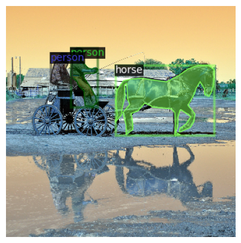
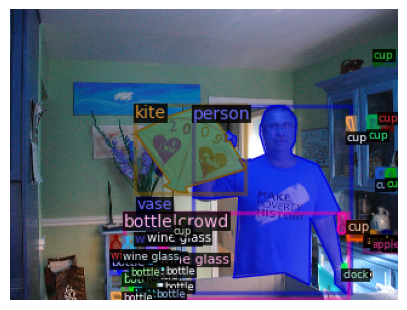
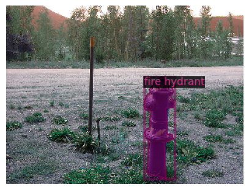

#!pip install git+https://github.com/facebookresearch/fvcore.git
#!git clone https://github.com/facebookresearch/detectron2 detectron2_repo
#!pip install -e detectron2_repoCV_Instance_Segmentation_0
Instance Segmentation
Detectron2 다운로드
COCO 2017 데이터셋 다운로드
!rm -r cocorm: cannot remove 'coco': No such file or directory!wget http://images.cocodataset.org/zips/train2017.zip
!wget http://images.cocodataset.org/zips/val2017.zip
!wget http://images.cocodataset.org/annotations/annotations_trainval2017.zip--2024-02-13 02:07:06-- http://images.cocodataset.org/zips/train2017.zip
Resolving images.cocodataset.org (images.cocodataset.org)... 16.182.33.73, 16.182.70.25, 52.217.104.196, ...
Connecting to images.cocodataset.org (images.cocodataset.org)|16.182.33.73|:80... connected.
HTTP request sent, awaiting response... 200 OK
Length: 19336861798 (18G) [application/zip]
Saving to: ‘train2017.zip’
train2017.zip 100%[===================>] 18.01G 14.6MB/s in 21m 15s
2024-02-13 02:28:21 (14.5 MB/s) - ‘train2017.zip’ saved [19336861798/19336861798]
--2024-02-13 02:28:21-- http://images.cocodataset.org/zips/val2017.zip
Resolving images.cocodataset.org (images.cocodataset.org)... 52.217.134.73, 54.231.199.1, 54.231.235.145, ...
Connecting to images.cocodataset.org (images.cocodataset.org)|52.217.134.73|:80... connected.
HTTP request sent, awaiting response... 200 OK
Length: 815585330 (778M) [application/zip]
Saving to: ‘val2017.zip’
val2017.zip 100%[===================>] 777.80M 8.26MB/s in 89s
2024-02-13 02:29:51 (8.70 MB/s) - ‘val2017.zip’ saved [815585330/815585330]
--2024-02-13 02:29:51-- http://images.cocodataset.org/annotations/annotations_trainval2017.zip
Resolving images.cocodataset.org (images.cocodataset.org)... 52.216.51.129, 52.216.213.169, 3.5.10.168, ...
Connecting to images.cocodataset.org (images.cocodataset.org)|52.216.51.129|:80... connected.
HTTP request sent, awaiting response... 200 OK
Length: 252907541 (241M) [application/zip]
Saving to: ‘annotations_trainval2017.zip’
annotations_trainva 100%[===================>] 241.19M 15.6MB/s in 17s
2024-02-13 02:30:09 (14.3 MB/s) - ‘annotations_trainval2017.zip’ saved [252907541/252907541]
# Unzip
!unzip -q train2017.zip -d ./coco
!unzip -q val2017.zip -d ./coco
!unzip -q annotations_trainval2017.zip -d ./coco# Some basic setup:
# Setup detectron2 logger
import detectron2
from detectron2.utils.logger import setup_logger
setup_logger()
# import some common libraries
import numpy as np
import os, json, cv2, random
import matplotlib.pyplot as plt
# import some common detectron2 utilities
from detectron2 import model_zoo
from detectron2.engine import DefaultPredictor
from detectron2.config import get_cfg
from detectron2.utils.visualizer import Visualizer
from detectron2.data import MetadataCatalog, DatasetCatalog, build_detection_test_loaderimport torch
# 재현성을 위한 시드넘버 고정
random_seed = 2024
torch.manual_seed(random_seed)
torch.cuda.manual_seed(random_seed)
torch.backends.cudnn.deterministic = True
torch.backends.cudnn.benchmark = False
np.random.seed(random_seed)
random.seed(random_seed)from detectron2.data.datasets import register_coco_instances
register_coco_instances("coco_train_data",{},'/root/2024winter/DL_tutorial/posts/coco/annotations/instances_val2017.json', '/root/2024winter/DL_tutorial/posts/coco/val2017')
register_coco_instances("coco_val_data",{},'/root/2024winter/DL_tutorial/posts/coco/annotations/instances_val2017.json', '/root/2024winter/DL_tutorial/posts/coco/val2017')# MetadataCatalog
train_metadata = MetadataCatalog.get("coco_train_data")
val_metadata = MetadataCatalog.get("coco_val_data")
train_metadatanamespace(name='coco_train_data',
json_file='/root/2024winter/DL_tutorial/posts/coco/annotations/instances_val2017.json',
image_root='/root/2024winter/DL_tutorial/posts/coco/val2017',
evaluator_type='coco')# DatasetCatalog
train_dataset_dicts = DatasetCatalog.get("coco_train_data")
val_dataset_dicts = DatasetCatalog.get("coco_val_data")[02/13 04:42:15 d2.data.datasets.coco]: Loaded 5000 images in COCO format from /root/2024winter/DL_tutorial/posts/coco/annotations/instances_val2017.json
[02/13 04:42:16 d2.data.datasets.coco]: Loading /root/2024winter/DL_tutorial/posts/coco/annotations/instances_val2017.json takes 1.03 seconds.
[02/13 04:42:17 d2.data.datasets.coco]: Loaded 5000 images in COCO format from /root/2024winter/DL_tutorial/posts/coco/annotations/instances_val2017.json
for d in random.sample(train_dataset_dicts, 3):
img = cv2.imread(d["file_name"])
visualizer = Visualizer(img[:, :, ::-1], metadata=train_metadata, scale=0.5)
vis = visualizer.draw_dataset_dict(d)
plt.figure(figsize=(5, 5))
plt.imshow(vis.get_image()[:, :, ::-1])
plt.axis("off")
plt.show()


from detectron2.engine import DefaultTrainer
cfg = get_cfg()
cfg.merge_from_file(
"./detectron2_repo/configs/COCO-InstanceSegmentation/mask_rcnn_R_50_FPN_3x.yaml"
)
cfg.DATASETS.TRAIN = ("coco_train_data",)
cfg.DATASETS.TEST = ("coco_val_data",) # no metrics implemented for this dataset
cfg.DATALOADER.NUM_WORKERS = 2
cfg.MODEL.WEIGHTS = "detectron2://COCO-InstanceSegmentation/mask_rcnn_R_50_FPN_3x/137849600/model_final_f10217.pkl" # initialize from model zoo
cfg.SOLVER.IMS_PER_BATCH = 2
cfg.SOLVER.BASE_LR = 0.002
cfg.SOLVER.MAX_ITER = 1000
cfg.MODEL.ROI_HEADS.BATCH_SIZE_PER_IMAGE = 128
cfg.MODEL.ROI_HEADS.NUM_CLASSES = 80
cfg.OUTPUT_DIR = "/root/2024winter/DL_tutorial/posts/outputs"
os.makedirs(cfg.OUTPUT_DIR, exist_ok=True)
trainer = DefaultTrainer(cfg)
trainer.resume_or_load(resume=False)
trainer.train()[02/13 04:44:51 d2.engine.defaults]: Model:
GeneralizedRCNN(
(backbone): FPN(
(fpn_lateral2): Conv2d(256, 256, kernel_size=(1, 1), stride=(1, 1))
(fpn_output2): Conv2d(256, 256, kernel_size=(3, 3), stride=(1, 1), padding=(1, 1))
(fpn_lateral3): Conv2d(512, 256, kernel_size=(1, 1), stride=(1, 1))
(fpn_output3): Conv2d(256, 256, kernel_size=(3, 3), stride=(1, 1), padding=(1, 1))
(fpn_lateral4): Conv2d(1024, 256, kernel_size=(1, 1), stride=(1, 1))
(fpn_output4): Conv2d(256, 256, kernel_size=(3, 3), stride=(1, 1), padding=(1, 1))
(fpn_lateral5): Conv2d(2048, 256, kernel_size=(1, 1), stride=(1, 1))
(fpn_output5): Conv2d(256, 256, kernel_size=(3, 3), stride=(1, 1), padding=(1, 1))
(top_block): LastLevelMaxPool()
(bottom_up): ResNet(
(stem): BasicStem(
(conv1): Conv2d(
3, 64, kernel_size=(7, 7), stride=(2, 2), padding=(3, 3), bias=False
(norm): FrozenBatchNorm2d(num_features=64, eps=1e-05)
)
)
(res2): Sequential(
(0): BottleneckBlock(
(shortcut): Conv2d(
64, 256, kernel_size=(1, 1), stride=(1, 1), bias=False
(norm): FrozenBatchNorm2d(num_features=256, eps=1e-05)
)
(conv1): Conv2d(
64, 64, kernel_size=(1, 1), stride=(1, 1), bias=False
(norm): FrozenBatchNorm2d(num_features=64, eps=1e-05)
)
(conv2): Conv2d(
64, 64, kernel_size=(3, 3), stride=(1, 1), padding=(1, 1), bias=False
(norm): FrozenBatchNorm2d(num_features=64, eps=1e-05)
)
(conv3): Conv2d(
64, 256, kernel_size=(1, 1), stride=(1, 1), bias=False
(norm): FrozenBatchNorm2d(num_features=256, eps=1e-05)
)
)
(1): BottleneckBlock(
(conv1): Conv2d(
256, 64, kernel_size=(1, 1), stride=(1, 1), bias=False
(norm): FrozenBatchNorm2d(num_features=64, eps=1e-05)
)
(conv2): Conv2d(
64, 64, kernel_size=(3, 3), stride=(1, 1), padding=(1, 1), bias=False
(norm): FrozenBatchNorm2d(num_features=64, eps=1e-05)
)
(conv3): Conv2d(
64, 256, kernel_size=(1, 1), stride=(1, 1), bias=False
(norm): FrozenBatchNorm2d(num_features=256, eps=1e-05)
)
)
(2): BottleneckBlock(
(conv1): Conv2d(
256, 64, kernel_size=(1, 1), stride=(1, 1), bias=False
(norm): FrozenBatchNorm2d(num_features=64, eps=1e-05)
)
(conv2): Conv2d(
64, 64, kernel_size=(3, 3), stride=(1, 1), padding=(1, 1), bias=False
(norm): FrozenBatchNorm2d(num_features=64, eps=1e-05)
)
(conv3): Conv2d(
64, 256, kernel_size=(1, 1), stride=(1, 1), bias=False
(norm): FrozenBatchNorm2d(num_features=256, eps=1e-05)
)
)
)
(res3): Sequential(
(0): BottleneckBlock(
(shortcut): Conv2d(
256, 512, kernel_size=(1, 1), stride=(2, 2), bias=False
(norm): FrozenBatchNorm2d(num_features=512, eps=1e-05)
)
(conv1): Conv2d(
256, 128, kernel_size=(1, 1), stride=(2, 2), bias=False
(norm): FrozenBatchNorm2d(num_features=128, eps=1e-05)
)
(conv2): Conv2d(
128, 128, kernel_size=(3, 3), stride=(1, 1), padding=(1, 1), bias=False
(norm): FrozenBatchNorm2d(num_features=128, eps=1e-05)
)
(conv3): Conv2d(
128, 512, kernel_size=(1, 1), stride=(1, 1), bias=False
(norm): FrozenBatchNorm2d(num_features=512, eps=1e-05)
)
)
(1): BottleneckBlock(
(conv1): Conv2d(
512, 128, kernel_size=(1, 1), stride=(1, 1), bias=False
(norm): FrozenBatchNorm2d(num_features=128, eps=1e-05)
)
(conv2): Conv2d(
128, 128, kernel_size=(3, 3), stride=(1, 1), padding=(1, 1), bias=False
(norm): FrozenBatchNorm2d(num_features=128, eps=1e-05)
)
(conv3): Conv2d(
128, 512, kernel_size=(1, 1), stride=(1, 1), bias=False
(norm): FrozenBatchNorm2d(num_features=512, eps=1e-05)
)
)
(2): BottleneckBlock(
(conv1): Conv2d(
512, 128, kernel_size=(1, 1), stride=(1, 1), bias=False
(norm): FrozenBatchNorm2d(num_features=128, eps=1e-05)
)
(conv2): Conv2d(
128, 128, kernel_size=(3, 3), stride=(1, 1), padding=(1, 1), bias=False
(norm): FrozenBatchNorm2d(num_features=128, eps=1e-05)
)
(conv3): Conv2d(
128, 512, kernel_size=(1, 1), stride=(1, 1), bias=False
(norm): FrozenBatchNorm2d(num_features=512, eps=1e-05)
)
)
(3): BottleneckBlock(
(conv1): Conv2d(
512, 128, kernel_size=(1, 1), stride=(1, 1), bias=False
(norm): FrozenBatchNorm2d(num_features=128, eps=1e-05)
)
(conv2): Conv2d(
128, 128, kernel_size=(3, 3), stride=(1, 1), padding=(1, 1), bias=False
(norm): FrozenBatchNorm2d(num_features=128, eps=1e-05)
)
(conv3): Conv2d(
128, 512, kernel_size=(1, 1), stride=(1, 1), bias=False
(norm): FrozenBatchNorm2d(num_features=512, eps=1e-05)
)
)
)
(res4): Sequential(
(0): BottleneckBlock(
(shortcut): Conv2d(
512, 1024, kernel_size=(1, 1), stride=(2, 2), bias=False
(norm): FrozenBatchNorm2d(num_features=1024, eps=1e-05)
)
(conv1): Conv2d(
512, 256, kernel_size=(1, 1), stride=(2, 2), bias=False
(norm): FrozenBatchNorm2d(num_features=256, eps=1e-05)
)
(conv2): Conv2d(
256, 256, kernel_size=(3, 3), stride=(1, 1), padding=(1, 1), bias=False
(norm): FrozenBatchNorm2d(num_features=256, eps=1e-05)
)
(conv3): Conv2d(
256, 1024, kernel_size=(1, 1), stride=(1, 1), bias=False
(norm): FrozenBatchNorm2d(num_features=1024, eps=1e-05)
)
)
(1): BottleneckBlock(
(conv1): Conv2d(
1024, 256, kernel_size=(1, 1), stride=(1, 1), bias=False
(norm): FrozenBatchNorm2d(num_features=256, eps=1e-05)
)
(conv2): Conv2d(
256, 256, kernel_size=(3, 3), stride=(1, 1), padding=(1, 1), bias=False
(norm): FrozenBatchNorm2d(num_features=256, eps=1e-05)
)
(conv3): Conv2d(
256, 1024, kernel_size=(1, 1), stride=(1, 1), bias=False
(norm): FrozenBatchNorm2d(num_features=1024, eps=1e-05)
)
)
(2): BottleneckBlock(
(conv1): Conv2d(
1024, 256, kernel_size=(1, 1), stride=(1, 1), bias=False
(norm): FrozenBatchNorm2d(num_features=256, eps=1e-05)
)
(conv2): Conv2d(
256, 256, kernel_size=(3, 3), stride=(1, 1), padding=(1, 1), bias=False
(norm): FrozenBatchNorm2d(num_features=256, eps=1e-05)
)
(conv3): Conv2d(
256, 1024, kernel_size=(1, 1), stride=(1, 1), bias=False
(norm): FrozenBatchNorm2d(num_features=1024, eps=1e-05)
)
)
(3): BottleneckBlock(
(conv1): Conv2d(
1024, 256, kernel_size=(1, 1), stride=(1, 1), bias=False
(norm): FrozenBatchNorm2d(num_features=256, eps=1e-05)
)
(conv2): Conv2d(
256, 256, kernel_size=(3, 3), stride=(1, 1), padding=(1, 1), bias=False
(norm): FrozenBatchNorm2d(num_features=256, eps=1e-05)
)
(conv3): Conv2d(
256, 1024, kernel_size=(1, 1), stride=(1, 1), bias=False
(norm): FrozenBatchNorm2d(num_features=1024, eps=1e-05)
)
)
(4): BottleneckBlock(
(conv1): Conv2d(
1024, 256, kernel_size=(1, 1), stride=(1, 1), bias=False
(norm): FrozenBatchNorm2d(num_features=256, eps=1e-05)
)
(conv2): Conv2d(
256, 256, kernel_size=(3, 3), stride=(1, 1), padding=(1, 1), bias=False
(norm): FrozenBatchNorm2d(num_features=256, eps=1e-05)
)
(conv3): Conv2d(
256, 1024, kernel_size=(1, 1), stride=(1, 1), bias=False
(norm): FrozenBatchNorm2d(num_features=1024, eps=1e-05)
)
)
(5): BottleneckBlock(
(conv1): Conv2d(
1024, 256, kernel_size=(1, 1), stride=(1, 1), bias=False
(norm): FrozenBatchNorm2d(num_features=256, eps=1e-05)
)
(conv2): Conv2d(
256, 256, kernel_size=(3, 3), stride=(1, 1), padding=(1, 1), bias=False
(norm): FrozenBatchNorm2d(num_features=256, eps=1e-05)
)
(conv3): Conv2d(
256, 1024, kernel_size=(1, 1), stride=(1, 1), bias=False
(norm): FrozenBatchNorm2d(num_features=1024, eps=1e-05)
)
)
)
(res5): Sequential(
(0): BottleneckBlock(
(shortcut): Conv2d(
1024, 2048, kernel_size=(1, 1), stride=(2, 2), bias=False
(norm): FrozenBatchNorm2d(num_features=2048, eps=1e-05)
)
(conv1): Conv2d(
1024, 512, kernel_size=(1, 1), stride=(2, 2), bias=False
(norm): FrozenBatchNorm2d(num_features=512, eps=1e-05)
)
(conv2): Conv2d(
512, 512, kernel_size=(3, 3), stride=(1, 1), padding=(1, 1), bias=False
(norm): FrozenBatchNorm2d(num_features=512, eps=1e-05)
)
(conv3): Conv2d(
512, 2048, kernel_size=(1, 1), stride=(1, 1), bias=False
(norm): FrozenBatchNorm2d(num_features=2048, eps=1e-05)
)
)
(1): BottleneckBlock(
(conv1): Conv2d(
2048, 512, kernel_size=(1, 1), stride=(1, 1), bias=False
(norm): FrozenBatchNorm2d(num_features=512, eps=1e-05)
)
(conv2): Conv2d(
512, 512, kernel_size=(3, 3), stride=(1, 1), padding=(1, 1), bias=False
(norm): FrozenBatchNorm2d(num_features=512, eps=1e-05)
)
(conv3): Conv2d(
512, 2048, kernel_size=(1, 1), stride=(1, 1), bias=False
(norm): FrozenBatchNorm2d(num_features=2048, eps=1e-05)
)
)
(2): BottleneckBlock(
(conv1): Conv2d(
2048, 512, kernel_size=(1, 1), stride=(1, 1), bias=False
(norm): FrozenBatchNorm2d(num_features=512, eps=1e-05)
)
(conv2): Conv2d(
512, 512, kernel_size=(3, 3), stride=(1, 1), padding=(1, 1), bias=False
(norm): FrozenBatchNorm2d(num_features=512, eps=1e-05)
)
(conv3): Conv2d(
512, 2048, kernel_size=(1, 1), stride=(1, 1), bias=False
(norm): FrozenBatchNorm2d(num_features=2048, eps=1e-05)
)
)
)
)
)
(proposal_generator): RPN(
(rpn_head): StandardRPNHead(
(conv): Conv2d(
256, 256, kernel_size=(3, 3), stride=(1, 1), padding=(1, 1)
(activation): ReLU()
)
(objectness_logits): Conv2d(256, 3, kernel_size=(1, 1), stride=(1, 1))
(anchor_deltas): Conv2d(256, 12, kernel_size=(1, 1), stride=(1, 1))
)
(anchor_generator): DefaultAnchorGenerator(
(cell_anchors): BufferList()
)
)
(roi_heads): StandardROIHeads(
(box_pooler): ROIPooler(
(level_poolers): ModuleList(
(0): ROIAlign(output_size=(7, 7), spatial_scale=0.25, sampling_ratio=0, aligned=True)
(1): ROIAlign(output_size=(7, 7), spatial_scale=0.125, sampling_ratio=0, aligned=True)
(2): ROIAlign(output_size=(7, 7), spatial_scale=0.0625, sampling_ratio=0, aligned=True)
(3): ROIAlign(output_size=(7, 7), spatial_scale=0.03125, sampling_ratio=0, aligned=True)
)
)
(box_head): FastRCNNConvFCHead(
(flatten): Flatten(start_dim=1, end_dim=-1)
(fc1): Linear(in_features=12544, out_features=1024, bias=True)
(fc_relu1): ReLU()
(fc2): Linear(in_features=1024, out_features=1024, bias=True)
(fc_relu2): ReLU()
)
(box_predictor): FastRCNNOutputLayers(
(cls_score): Linear(in_features=1024, out_features=81, bias=True)
(bbox_pred): Linear(in_features=1024, out_features=320, bias=True)
)
(mask_pooler): ROIPooler(
(level_poolers): ModuleList(
(0): ROIAlign(output_size=(14, 14), spatial_scale=0.25, sampling_ratio=0, aligned=True)
(1): ROIAlign(output_size=(14, 14), spatial_scale=0.125, sampling_ratio=0, aligned=True)
(2): ROIAlign(output_size=(14, 14), spatial_scale=0.0625, sampling_ratio=0, aligned=True)
(3): ROIAlign(output_size=(14, 14), spatial_scale=0.03125, sampling_ratio=0, aligned=True)
)
)
(mask_head): MaskRCNNConvUpsampleHead(
(mask_fcn1): Conv2d(
256, 256, kernel_size=(3, 3), stride=(1, 1), padding=(1, 1)
(activation): ReLU()
)
(mask_fcn2): Conv2d(
256, 256, kernel_size=(3, 3), stride=(1, 1), padding=(1, 1)
(activation): ReLU()
)
(mask_fcn3): Conv2d(
256, 256, kernel_size=(3, 3), stride=(1, 1), padding=(1, 1)
(activation): ReLU()
)
(mask_fcn4): Conv2d(
256, 256, kernel_size=(3, 3), stride=(1, 1), padding=(1, 1)
(activation): ReLU()
)
(deconv): ConvTranspose2d(256, 256, kernel_size=(2, 2), stride=(2, 2))
(deconv_relu): ReLU()
(predictor): Conv2d(256, 80, kernel_size=(1, 1), stride=(1, 1))
)
)
)
[02/13 04:44:52 d2.data.datasets.coco]: Loading /root/2024winter/DL_tutorial/posts/coco/annotations/instances_val2017.json takes 1.07 seconds.
[02/13 04:44:52 d2.data.datasets.coco]: Loaded 5000 images in COCO format from /root/2024winter/DL_tutorial/posts/coco/annotations/instances_val2017.json
[02/13 04:44:52 d2.data.build]: Removed 48 images with no usable annotations. 4952 images left.
[02/13 04:44:52 d2.data.dataset_mapper]: [DatasetMapper] Augmentations used in training: [ResizeShortestEdge(short_edge_length=(640, 672, 704, 736, 768, 800), max_size=1333, sample_style='choice'), RandomFlip()]
[02/13 04:44:52 d2.data.build]: Using training sampler TrainingSampler
[02/13 04:44:52 d2.data.common]: Serializing the dataset using: <class 'detectron2.data.common._TorchSerializedList'>
[02/13 04:44:52 d2.data.common]: Serializing 4952 elements to byte tensors and concatenating them all ...
[02/13 04:44:52 d2.data.common]: Serialized dataset takes 19.21 MiB
[02/13 04:44:52 d2.data.build]: Making batched data loader with batch_size=2
WARNING [02/13 04:44:52 d2.solver.build]: SOLVER.STEPS contains values larger than SOLVER.MAX_ITER. These values will be ignored.
[02/13 04:44:53 d2.checkpoint.detection_checkpoint]: [DetectionCheckpointer] Loading from detectron2://COCO-InstanceSegmentation/mask_rcnn_R_50_FPN_3x/137849600/model_final_f10217.pkl ...
[02/13 04:44:53 d2.engine.train_loop]: Starting training from iteration 0
[02/13 04:44:55 d2.utils.events]: eta: 0:01:51 iter: 19 total_loss: 0.9135 loss_cls: 0.2255 loss_box_reg: 0.3434 loss_mask: 0.1967 loss_rpn_cls: 0.01907 loss_rpn_loc: 0.02518 time: 0.1183 last_time: 0.1094 data_time: 0.0207 last_data_time: 0.0048 lr: 3.9962e-05 max_mem: 2468M
[02/13 04:44:58 d2.utils.events]: eta: 0:01:53 iter: 39 total_loss: 0.9642 loss_cls: 0.2753 loss_box_reg: 0.3455 loss_mask: 0.2147 loss_rpn_cls: 0.02717 loss_rpn_loc: 0.04455 time: 0.1210 last_time: 0.1222 data_time: 0.0081 last_data_time: 0.0082 lr: 7.9922e-05 max_mem: 2468M
[02/13 04:45:00 d2.utils.events]: eta: 0:01:50 iter: 59 total_loss: 1.091 loss_cls: 0.2995 loss_box_reg: 0.4305 loss_mask: 0.2721 loss_rpn_cls: 0.0325 loss_rpn_loc: 0.05139 time: 0.1211 last_time: 0.1111 data_time: 0.0063 last_data_time: 0.0075 lr: 0.00011988 max_mem: 2468M
[02/13 04:45:03 d2.utils.events]: eta: 0:01:48 iter: 79 total_loss: 0.9919 loss_cls: 0.2939 loss_box_reg: 0.3489 loss_mask: 0.2043 loss_rpn_cls: 0.03127 loss_rpn_loc: 0.04819 time: 0.1205 last_time: 0.1033 data_time: 0.0104 last_data_time: 0.0054 lr: 0.00015984 max_mem: 2468M
[02/13 04:45:05 d2.utils.events]: eta: 0:01:45 iter: 99 total_loss: 1.055 loss_cls: 0.2229 loss_box_reg: 0.4061 loss_mask: 0.2197 loss_rpn_cls: 0.04041 loss_rpn_loc: 0.06296 time: 0.1200 last_time: 0.1120 data_time: 0.0085 last_data_time: 0.0115 lr: 0.0001998 max_mem: 2468M
[02/13 04:45:08 d2.utils.events]: eta: 0:01:45 iter: 119 total_loss: 1.126 loss_cls: 0.29 loss_box_reg: 0.3477 loss_mask: 0.2278 loss_rpn_cls: 0.04413 loss_rpn_loc: 0.08736 time: 0.1218 last_time: 0.1353 data_time: 0.0086 last_data_time: 0.0079 lr: 0.00023976 max_mem: 2468M
[02/13 04:45:10 d2.utils.events]: eta: 0:01:44 iter: 139 total_loss: 1.052 loss_cls: 0.3016 loss_box_reg: 0.4075 loss_mask: 0.2272 loss_rpn_cls: 0.03207 loss_rpn_loc: 0.04996 time: 0.1235 last_time: 0.1336 data_time: 0.0109 last_data_time: 0.0096 lr: 0.00027972 max_mem: 2468M
[02/13 04:45:13 d2.utils.events]: eta: 0:01:41 iter: 159 total_loss: 1.12 loss_cls: 0.295 loss_box_reg: 0.401 loss_mask: 0.2615 loss_rpn_cls: 0.02364 loss_rpn_loc: 0.04561 time: 0.1234 last_time: 0.1250 data_time: 0.0067 last_data_time: 0.0081 lr: 0.00031968 max_mem: 2473M
[02/13 04:45:16 d2.utils.events]: eta: 0:01:39 iter: 179 total_loss: 0.9365 loss_cls: 0.2408 loss_box_reg: 0.3592 loss_mask: 0.233 loss_rpn_cls: 0.01753 loss_rpn_loc: 0.03028 time: 0.1244 last_time: 0.1110 data_time: 0.0151 last_data_time: 0.0066 lr: 0.00035964 max_mem: 2473M
[02/13 04:45:18 d2.utils.events]: eta: 0:01:37 iter: 199 total_loss: 0.9998 loss_cls: 0.2416 loss_box_reg: 0.4081 loss_mask: 0.2409 loss_rpn_cls: 0.02947 loss_rpn_loc: 0.03085 time: 0.1246 last_time: 0.1183 data_time: 0.0094 last_data_time: 0.0052 lr: 0.0003996 max_mem: 2473M
[02/13 04:45:20 d2.utils.events]: eta: 0:01:34 iter: 219 total_loss: 0.9961 loss_cls: 0.2573 loss_box_reg: 0.3871 loss_mask: 0.236 loss_rpn_cls: 0.03193 loss_rpn_loc: 0.03565 time: 0.1242 last_time: 0.1278 data_time: 0.0062 last_data_time: 0.0088 lr: 0.00043956 max_mem: 2473M
[02/13 04:45:23 d2.utils.events]: eta: 0:01:32 iter: 239 total_loss: 0.9405 loss_cls: 0.2386 loss_box_reg: 0.3411 loss_mask: 0.2369 loss_rpn_cls: 0.02037 loss_rpn_loc: 0.0328 time: 0.1240 last_time: 0.1462 data_time: 0.0074 last_data_time: 0.0097 lr: 0.00047952 max_mem: 2473M
[02/13 04:45:26 d2.utils.events]: eta: 0:01:29 iter: 259 total_loss: 1.075 loss_cls: 0.3166 loss_box_reg: 0.3828 loss_mask: 0.2512 loss_rpn_cls: 0.0336 loss_rpn_loc: 0.04556 time: 0.1245 last_time: 0.1265 data_time: 0.0094 last_data_time: 0.0056 lr: 0.00051948 max_mem: 2473M
[02/13 04:45:28 d2.utils.events]: eta: 0:01:26 iter: 279 total_loss: 0.9532 loss_cls: 0.2711 loss_box_reg: 0.3281 loss_mask: 0.2328 loss_rpn_cls: 0.02803 loss_rpn_loc: 0.03686 time: 0.1239 last_time: 0.1217 data_time: 0.0073 last_data_time: 0.0062 lr: 0.00055944 max_mem: 2473M
[02/13 04:45:30 d2.utils.events]: eta: 0:01:24 iter: 299 total_loss: 0.8519 loss_cls: 0.236 loss_box_reg: 0.3498 loss_mask: 0.2202 loss_rpn_cls: 0.01544 loss_rpn_loc: 0.02504 time: 0.1239 last_time: 0.1432 data_time: 0.0085 last_data_time: 0.0068 lr: 0.0005994 max_mem: 2473M
[02/13 04:45:33 d2.utils.events]: eta: 0:01:22 iter: 319 total_loss: 0.9913 loss_cls: 0.2939 loss_box_reg: 0.3954 loss_mask: 0.2473 loss_rpn_cls: 0.02953 loss_rpn_loc: 0.05801 time: 0.1243 last_time: 0.1396 data_time: 0.0099 last_data_time: 0.0036 lr: 0.00063936 max_mem: 2473M
[02/13 04:45:35 d2.utils.events]: eta: 0:01:19 iter: 339 total_loss: 1.084 loss_cls: 0.2824 loss_box_reg: 0.3847 loss_mask: 0.2359 loss_rpn_cls: 0.03157 loss_rpn_loc: 0.03688 time: 0.1241 last_time: 0.1225 data_time: 0.0076 last_data_time: 0.0057 lr: 0.00067932 max_mem: 2473M
[02/13 04:45:38 d2.utils.events]: eta: 0:01:16 iter: 359 total_loss: 0.9851 loss_cls: 0.2923 loss_box_reg: 0.3409 loss_mask: 0.2503 loss_rpn_cls: 0.01778 loss_rpn_loc: 0.03838 time: 0.1236 last_time: 0.1043 data_time: 0.0061 last_data_time: 0.0077 lr: 0.00071928 max_mem: 2473M
[02/13 04:45:40 d2.utils.events]: eta: 0:01:14 iter: 379 total_loss: 0.9603 loss_cls: 0.243 loss_box_reg: 0.3565 loss_mask: 0.2018 loss_rpn_cls: 0.02237 loss_rpn_loc: 0.04897 time: 0.1233 last_time: 0.1007 data_time: 0.0075 last_data_time: 0.0057 lr: 0.00075924 max_mem: 2473M
[02/13 04:45:43 d2.utils.events]: eta: 0:01:11 iter: 399 total_loss: 0.8493 loss_cls: 0.193 loss_box_reg: 0.2683 loss_mask: 0.2049 loss_rpn_cls: 0.04498 loss_rpn_loc: 0.06218 time: 0.1231 last_time: 0.1183 data_time: 0.0095 last_data_time: 0.0048 lr: 0.0007992 max_mem: 2473M
[02/13 04:45:45 d2.utils.events]: eta: 0:01:09 iter: 419 total_loss: 0.9737 loss_cls: 0.2657 loss_box_reg: 0.3631 loss_mask: 0.2675 loss_rpn_cls: 0.0237 loss_rpn_loc: 0.02856 time: 0.1228 last_time: 0.1337 data_time: 0.0061 last_data_time: 0.0055 lr: 0.00083916 max_mem: 2473M
[02/13 04:45:47 d2.utils.events]: eta: 0:01:06 iter: 439 total_loss: 0.9801 loss_cls: 0.2758 loss_box_reg: 0.3691 loss_mask: 0.2352 loss_rpn_cls: 0.03374 loss_rpn_loc: 0.0679 time: 0.1228 last_time: 0.1154 data_time: 0.0095 last_data_time: 0.0057 lr: 0.00087912 max_mem: 2473M
[02/13 04:45:50 d2.utils.events]: eta: 0:01:04 iter: 459 total_loss: 0.9442 loss_cls: 0.2619 loss_box_reg: 0.3198 loss_mask: 0.2345 loss_rpn_cls: 0.03548 loss_rpn_loc: 0.05815 time: 0.1226 last_time: 0.1406 data_time: 0.0054 last_data_time: 0.0030 lr: 0.00091908 max_mem: 2473M
[02/13 04:45:52 d2.utils.events]: eta: 0:01:01 iter: 479 total_loss: 1.086 loss_cls: 0.2395 loss_box_reg: 0.4103 loss_mask: 0.2464 loss_rpn_cls: 0.04081 loss_rpn_loc: 0.06109 time: 0.1225 last_time: 0.1251 data_time: 0.0082 last_data_time: 0.0061 lr: 0.00095904 max_mem: 2473M
[02/13 04:45:55 d2.utils.events]: eta: 0:00:59 iter: 499 total_loss: 1.179 loss_cls: 0.31 loss_box_reg: 0.3986 loss_mask: 0.2535 loss_rpn_cls: 0.04035 loss_rpn_loc: 0.1044 time: 0.1225 last_time: 0.1086 data_time: 0.0073 last_data_time: 0.0070 lr: 0.000999 max_mem: 2473M
[02/13 04:45:57 d2.utils.events]: eta: 0:00:57 iter: 519 total_loss: 0.9325 loss_cls: 0.2939 loss_box_reg: 0.3721 loss_mask: 0.2286 loss_rpn_cls: 0.02657 loss_rpn_loc: 0.02841 time: 0.1229 last_time: 0.1582 data_time: 0.0096 last_data_time: 0.0217 lr: 0.001039 max_mem: 2473M
[02/13 04:46:00 d2.utils.events]: eta: 0:00:55 iter: 539 total_loss: 0.9261 loss_cls: 0.2287 loss_box_reg: 0.3299 loss_mask: 0.2194 loss_rpn_cls: 0.02425 loss_rpn_loc: 0.05447 time: 0.1230 last_time: 0.1237 data_time: 0.0062 last_data_time: 0.0050 lr: 0.0010789 max_mem: 2473M
[02/13 04:46:02 d2.utils.events]: eta: 0:00:52 iter: 559 total_loss: 1.173 loss_cls: 0.3525 loss_box_reg: 0.3845 loss_mask: 0.26 loss_rpn_cls: 0.03674 loss_rpn_loc: 0.0619 time: 0.1229 last_time: 0.1308 data_time: 0.0065 last_data_time: 0.0054 lr: 0.0011189 max_mem: 2473M
[02/13 04:46:05 d2.utils.events]: eta: 0:00:50 iter: 579 total_loss: 1.017 loss_cls: 0.3499 loss_box_reg: 0.3281 loss_mask: 0.2034 loss_rpn_cls: 0.03605 loss_rpn_loc: 0.04706 time: 0.1231 last_time: 0.1141 data_time: 0.0105 last_data_time: 0.0081 lr: 0.0011588 max_mem: 2473M
[02/13 04:46:07 d2.utils.events]: eta: 0:00:48 iter: 599 total_loss: 1.047 loss_cls: 0.3254 loss_box_reg: 0.3606 loss_mask: 0.2615 loss_rpn_cls: 0.03869 loss_rpn_loc: 0.03192 time: 0.1235 last_time: 0.1356 data_time: 0.0088 last_data_time: 0.0192 lr: 0.0011988 max_mem: 2473M
[02/13 04:46:10 d2.utils.events]: eta: 0:00:45 iter: 619 total_loss: 0.7698 loss_cls: 0.2613 loss_box_reg: 0.2978 loss_mask: 0.2185 loss_rpn_cls: 0.02539 loss_rpn_loc: 0.03508 time: 0.1241 last_time: 0.1243 data_time: 0.0130 last_data_time: 0.0107 lr: 0.0012388 max_mem: 2473M
[02/13 04:46:13 d2.utils.events]: eta: 0:00:43 iter: 639 total_loss: 1.112 loss_cls: 0.353 loss_box_reg: 0.3621 loss_mask: 0.2437 loss_rpn_cls: 0.02337 loss_rpn_loc: 0.05272 time: 0.1247 last_time: 0.1451 data_time: 0.0151 last_data_time: 0.0145 lr: 0.0012787 max_mem: 2473M
[02/13 04:46:16 d2.utils.events]: eta: 0:00:41 iter: 659 total_loss: 1.291 loss_cls: 0.3047 loss_box_reg: 0.3817 loss_mask: 0.2762 loss_rpn_cls: 0.03335 loss_rpn_loc: 0.05792 time: 0.1257 last_time: 0.1471 data_time: 0.0157 last_data_time: 0.0076 lr: 0.0013187 max_mem: 2473M
[02/13 04:46:20 d2.utils.events]: eta: 0:00:39 iter: 679 total_loss: 1.081 loss_cls: 0.3433 loss_box_reg: 0.3318 loss_mask: 0.2444 loss_rpn_cls: 0.05075 loss_rpn_loc: 0.04307 time: 0.1268 last_time: 0.1964 data_time: 0.0254 last_data_time: 0.0112 lr: 0.0013586 max_mem: 2473M
[02/13 04:46:23 d2.utils.events]: eta: 0:00:36 iter: 699 total_loss: 0.9815 loss_cls: 0.2452 loss_box_reg: 0.3903 loss_mask: 0.2241 loss_rpn_cls: 0.02741 loss_rpn_loc: 0.04214 time: 0.1278 last_time: 0.1553 data_time: 0.0106 last_data_time: 0.0135 lr: 0.0013986 max_mem: 2473M
[02/13 04:46:26 d2.utils.events]: eta: 0:00:34 iter: 719 total_loss: 1.041 loss_cls: 0.3232 loss_box_reg: 0.3421 loss_mask: 0.2496 loss_rpn_cls: 0.0315 loss_rpn_loc: 0.03683 time: 0.1282 last_time: 0.1179 data_time: 0.0103 last_data_time: 0.0061 lr: 0.0014386 max_mem: 2473M
[02/13 04:46:28 d2.utils.events]: eta: 0:00:31 iter: 739 total_loss: 1.335 loss_cls: 0.4221 loss_box_reg: 0.433 loss_mask: 0.2776 loss_rpn_cls: 0.03746 loss_rpn_loc: 0.06529 time: 0.1283 last_time: 0.1676 data_time: 0.0087 last_data_time: 0.0276 lr: 0.0014785 max_mem: 2473M
[02/13 04:46:31 d2.utils.events]: eta: 0:00:29 iter: 759 total_loss: 1.054 loss_cls: 0.3465 loss_box_reg: 0.3453 loss_mask: 0.2371 loss_rpn_cls: 0.03524 loss_rpn_loc: 0.06073 time: 0.1286 last_time: 0.1249 data_time: 0.0068 last_data_time: 0.0056 lr: 0.0015185 max_mem: 2473M
[02/13 04:46:34 d2.utils.events]: eta: 0:00:27 iter: 779 total_loss: 1.288 loss_cls: 0.4118 loss_box_reg: 0.4728 loss_mask: 0.2628 loss_rpn_cls: 0.03728 loss_rpn_loc: 0.06528 time: 0.1285 last_time: 0.1223 data_time: 0.0067 last_data_time: 0.0134 lr: 0.0015584 max_mem: 2473M
[02/13 04:46:36 d2.utils.events]: eta: 0:00:24 iter: 799 total_loss: 1.276 loss_cls: 0.3934 loss_box_reg: 0.4404 loss_mask: 0.2486 loss_rpn_cls: 0.03664 loss_rpn_loc: 0.06733 time: 0.1285 last_time: 0.1452 data_time: 0.0106 last_data_time: 0.0204 lr: 0.0015984 max_mem: 2473M
[02/13 04:46:39 d2.utils.events]: eta: 0:00:22 iter: 819 total_loss: 1.046 loss_cls: 0.3259 loss_box_reg: 0.3935 loss_mask: 0.2525 loss_rpn_cls: 0.04915 loss_rpn_loc: 0.04426 time: 0.1283 last_time: 0.1370 data_time: 0.0093 last_data_time: 0.0082 lr: 0.0016384 max_mem: 2473M
[02/13 04:46:41 d2.utils.events]: eta: 0:00:19 iter: 839 total_loss: 1.168 loss_cls: 0.3326 loss_box_reg: 0.4265 loss_mask: 0.2727 loss_rpn_cls: 0.0369 loss_rpn_loc: 0.09471 time: 0.1282 last_time: 0.1198 data_time: 0.0080 last_data_time: 0.0050 lr: 0.0016783 max_mem: 2473M
[02/13 04:46:44 d2.utils.events]: eta: 0:00:17 iter: 859 total_loss: 1.234 loss_cls: 0.3414 loss_box_reg: 0.4458 loss_mask: 0.2656 loss_rpn_cls: 0.06422 loss_rpn_loc: 0.08606 time: 0.1280 last_time: 0.1110 data_time: 0.0063 last_data_time: 0.0099 lr: 0.0017183 max_mem: 2473M
[02/13 04:46:46 d2.utils.events]: eta: 0:00:14 iter: 879 total_loss: 1.186 loss_cls: 0.3201 loss_box_reg: 0.402 loss_mask: 0.2859 loss_rpn_cls: 0.03309 loss_rpn_loc: 0.03605 time: 0.1279 last_time: 0.1252 data_time: 0.0071 last_data_time: 0.0053 lr: 0.0017582 max_mem: 2473M
[02/13 04:46:49 d2.utils.events]: eta: 0:00:12 iter: 899 total_loss: 1.131 loss_cls: 0.3438 loss_box_reg: 0.3714 loss_mask: 0.2574 loss_rpn_cls: 0.02271 loss_rpn_loc: 0.04514 time: 0.1278 last_time: 0.1091 data_time: 0.0055 last_data_time: 0.0058 lr: 0.0017982 max_mem: 2473M
[02/13 04:46:51 d2.utils.events]: eta: 0:00:09 iter: 919 total_loss: 1.369 loss_cls: 0.3949 loss_box_reg: 0.4476 loss_mask: 0.2914 loss_rpn_cls: 0.04681 loss_rpn_loc: 0.09672 time: 0.1275 last_time: 0.1167 data_time: 0.0074 last_data_time: 0.0101 lr: 0.0018382 max_mem: 2473M
[02/13 04:46:53 d2.utils.events]: eta: 0:00:07 iter: 939 total_loss: 1.247 loss_cls: 0.3892 loss_box_reg: 0.4228 loss_mask: 0.2499 loss_rpn_cls: 0.05528 loss_rpn_loc: 0.04001 time: 0.1272 last_time: 0.0998 data_time: 0.0078 last_data_time: 0.0034 lr: 0.0018781 max_mem: 2473M
[02/13 04:46:56 d2.utils.events]: eta: 0:00:04 iter: 959 total_loss: 1.189 loss_cls: 0.4043 loss_box_reg: 0.4079 loss_mask: 0.2503 loss_rpn_cls: 0.03474 loss_rpn_loc: 0.06123 time: 0.1271 last_time: 0.1097 data_time: 0.0067 last_data_time: 0.0051 lr: 0.0019181 max_mem: 2473M
[02/13 04:46:58 d2.utils.events]: eta: 0:00:02 iter: 979 total_loss: 1.276 loss_cls: 0.3649 loss_box_reg: 0.4229 loss_mask: 0.2671 loss_rpn_cls: 0.0651 loss_rpn_loc: 0.1141 time: 0.1269 last_time: 0.1131 data_time: 0.0070 last_data_time: 0.0059 lr: 0.001958 max_mem: 2473M
[02/13 04:47:01 d2.utils.events]: eta: 0:00:00 iter: 999 total_loss: 1.171 loss_cls: 0.4161 loss_box_reg: 0.4521 loss_mask: 0.2544 loss_rpn_cls: 0.04434 loss_rpn_loc: 0.03685 time: 0.1266 last_time: 0.1066 data_time: 0.0076 last_data_time: 0.0030 lr: 0.001998 max_mem: 2473M
[02/13 04:47:01 d2.engine.hooks]: Overall training speed: 998 iterations in 0:02:06 (0.1266 s / it)
[02/13 04:47:01 d2.engine.hooks]: Total training time: 0:02:08 (0:00:01 on hooks)
[02/13 04:47:02 d2.data.datasets.coco]: Loading /root/2024winter/DL_tutorial/posts/coco/annotations/instances_val2017.json takes 1.06 seconds.
[02/13 04:47:03 d2.data.datasets.coco]: Loaded 5000 images in COCO format from /root/2024winter/DL_tutorial/posts/coco/annotations/instances_val2017.json
[02/13 04:47:03 d2.data.dataset_mapper]: [DatasetMapper] Augmentations used in inference: [ResizeShortestEdge(short_edge_length=(800, 800), max_size=1333, sample_style='choice')]
[02/13 04:47:03 d2.data.common]: Serializing the dataset using: <class 'detectron2.data.common._TorchSerializedList'>
[02/13 04:47:03 d2.data.common]: Serializing 5000 elements to byte tensors and concatenating them all ...
[02/13 04:47:04 d2.data.common]: Serialized dataset takes 19.22 MiB
WARNING [02/13 04:47:04 d2.engine.defaults]: No evaluator found. Use `DefaultTrainer.test(evaluators=)`, or implement its `build_evaluator` method.from detectron2.evaluation import COCOEvaluator, inference_on_dataset
cfg.MODEL.WEIGHTS = os.path.join(cfg.OUTPUT_DIR, "model_final.pth")
cfg.MODEL.ROI_HEADS.SCORE_THRESH_TEST = 0.85
predictor = DefaultPredictor(cfg)
evaluator = COCOEvaluator("coco_val_data", output_dir = "./output")
val_loader = build_detection_test_loader(cfg, "coco_val_data")
inference_on_dataset(trainer.model, val_loader, evaluator)[02/13 04:51:01 d2.checkpoint.detection_checkpoint]: [DetectionCheckpointer] Loading from /root/2024winter/DL_tutorial/posts/outputs/model_final.pth ...
[02/13 04:51:03 d2.data.datasets.coco]: Loaded 5000 images in COCO format from /root/2024winter/DL_tutorial/posts/coco/annotations/instances_val2017.json
[02/13 04:51:04 d2.data.dataset_mapper]: [DatasetMapper] Augmentations used in inference: [ResizeShortestEdge(short_edge_length=(800, 800), max_size=1333, sample_style='choice')]
[02/13 04:51:04 d2.data.common]: Serializing the dataset using: <class 'detectron2.data.common._TorchSerializedList'>
[02/13 04:51:04 d2.data.common]: Serializing 5000 elements to byte tensors and concatenating them all ...
[02/13 04:51:04 d2.data.common]: Serialized dataset takes 19.22 MiB
[02/13 04:51:04 d2.evaluation.evaluator]: Start inference on 5000 batches
[02/13 04:51:05 d2.evaluation.evaluator]: Inference done 11/5000. Dataloading: 0.0014 s/iter. Inference: 0.0588 s/iter. Eval: 0.0347 s/iter. Total: 0.0949 s/iter. ETA=0:07:53
[02/13 04:51:10 d2.evaluation.evaluator]: Inference done 69/5000. Dataloading: 0.0018 s/iter. Inference: 0.0511 s/iter. Eval: 0.0343 s/iter. Total: 0.0874 s/iter. ETA=0:07:10
[02/13 04:51:15 d2.evaluation.evaluator]: Inference done 124/5000. Dataloading: 0.0019 s/iter. Inference: 0.0505 s/iter. Eval: 0.0371 s/iter. Total: 0.0896 s/iter. ETA=0:07:16
[02/13 04:51:20 d2.evaluation.evaluator]: Inference done 184/5000. Dataloading: 0.0019 s/iter. Inference: 0.0480 s/iter. Eval: 0.0375 s/iter. Total: 0.0875 s/iter. ETA=0:07:01
[02/13 04:51:25 d2.evaluation.evaluator]: Inference done 247/5000. Dataloading: 0.0018 s/iter. Inference: 0.0473 s/iter. Eval: 0.0362 s/iter. Total: 0.0854 s/iter. ETA=0:06:45
[02/13 04:51:31 d2.evaluation.evaluator]: Inference done 312/5000. Dataloading: 0.0018 s/iter. Inference: 0.0457 s/iter. Eval: 0.0363 s/iter. Total: 0.0838 s/iter. ETA=0:06:32
[02/13 04:51:36 d2.evaluation.evaluator]: Inference done 371/5000. Dataloading: 0.0019 s/iter. Inference: 0.0460 s/iter. Eval: 0.0361 s/iter. Total: 0.0841 s/iter. ETA=0:06:29
[02/13 04:51:41 d2.evaluation.evaluator]: Inference done 431/5000. Dataloading: 0.0019 s/iter. Inference: 0.0464 s/iter. Eval: 0.0356 s/iter. Total: 0.0840 s/iter. ETA=0:06:23
[02/13 04:51:46 d2.evaluation.evaluator]: Inference done 489/5000. Dataloading: 0.0019 s/iter. Inference: 0.0471 s/iter. Eval: 0.0352 s/iter. Total: 0.0843 s/iter. ETA=0:06:20
[02/13 04:51:51 d2.evaluation.evaluator]: Inference done 539/5000. Dataloading: 0.0019 s/iter. Inference: 0.0476 s/iter. Eval: 0.0363 s/iter. Total: 0.0860 s/iter. ETA=0:06:23
[02/13 04:51:56 d2.evaluation.evaluator]: Inference done 596/5000. Dataloading: 0.0020 s/iter. Inference: 0.0476 s/iter. Eval: 0.0365 s/iter. Total: 0.0862 s/iter. ETA=0:06:19
[02/13 04:52:01 d2.evaluation.evaluator]: Inference done 653/5000. Dataloading: 0.0020 s/iter. Inference: 0.0475 s/iter. Eval: 0.0368 s/iter. Total: 0.0863 s/iter. ETA=0:06:15
[02/13 04:52:06 d2.evaluation.evaluator]: Inference done 713/5000. Dataloading: 0.0020 s/iter. Inference: 0.0474 s/iter. Eval: 0.0367 s/iter. Total: 0.0862 s/iter. ETA=0:06:09
[02/13 04:52:11 d2.evaluation.evaluator]: Inference done 777/5000. Dataloading: 0.0020 s/iter. Inference: 0.0470 s/iter. Eval: 0.0365 s/iter. Total: 0.0856 s/iter. ETA=0:06:01
[02/13 04:52:16 d2.evaluation.evaluator]: Inference done 835/5000. Dataloading: 0.0020 s/iter. Inference: 0.0471 s/iter. Eval: 0.0365 s/iter. Total: 0.0856 s/iter. ETA=0:05:56
[02/13 04:52:21 d2.evaluation.evaluator]: Inference done 895/5000. Dataloading: 0.0020 s/iter. Inference: 0.0471 s/iter. Eval: 0.0364 s/iter. Total: 0.0856 s/iter. ETA=0:05:51
[02/13 04:52:26 d2.evaluation.evaluator]: Inference done 953/5000. Dataloading: 0.0020 s/iter. Inference: 0.0471 s/iter. Eval: 0.0364 s/iter. Total: 0.0856 s/iter. ETA=0:05:46
[02/13 04:52:31 d2.evaluation.evaluator]: Inference done 1015/5000. Dataloading: 0.0020 s/iter. Inference: 0.0470 s/iter. Eval: 0.0362 s/iter. Total: 0.0853 s/iter. ETA=0:05:40
[02/13 04:52:36 d2.evaluation.evaluator]: Inference done 1074/5000. Dataloading: 0.0020 s/iter. Inference: 0.0469 s/iter. Eval: 0.0363 s/iter. Total: 0.0853 s/iter. ETA=0:05:35
[02/13 04:52:41 d2.evaluation.evaluator]: Inference done 1133/5000. Dataloading: 0.0020 s/iter. Inference: 0.0470 s/iter. Eval: 0.0362 s/iter. Total: 0.0853 s/iter. ETA=0:05:29
[02/13 04:52:46 d2.evaluation.evaluator]: Inference done 1193/5000. Dataloading: 0.0020 s/iter. Inference: 0.0470 s/iter. Eval: 0.0361 s/iter. Total: 0.0853 s/iter. ETA=0:05:24
[02/13 04:52:51 d2.evaluation.evaluator]: Inference done 1253/5000. Dataloading: 0.0020 s/iter. Inference: 0.0468 s/iter. Eval: 0.0363 s/iter. Total: 0.0852 s/iter. ETA=0:05:19
[02/13 04:52:56 d2.evaluation.evaluator]: Inference done 1313/5000. Dataloading: 0.0020 s/iter. Inference: 0.0468 s/iter. Eval: 0.0362 s/iter. Total: 0.0852 s/iter. ETA=0:05:14
[02/13 04:53:01 d2.evaluation.evaluator]: Inference done 1365/5000. Dataloading: 0.0020 s/iter. Inference: 0.0468 s/iter. Eval: 0.0367 s/iter. Total: 0.0856 s/iter. ETA=0:05:11
[02/13 04:53:06 d2.evaluation.evaluator]: Inference done 1427/5000. Dataloading: 0.0020 s/iter. Inference: 0.0468 s/iter. Eval: 0.0366 s/iter. Total: 0.0855 s/iter. ETA=0:05:05
[02/13 04:53:11 d2.evaluation.evaluator]: Inference done 1487/5000. Dataloading: 0.0020 s/iter. Inference: 0.0467 s/iter. Eval: 0.0366 s/iter. Total: 0.0854 s/iter. ETA=0:04:59
[02/13 04:53:16 d2.evaluation.evaluator]: Inference done 1547/5000. Dataloading: 0.0020 s/iter. Inference: 0.0466 s/iter. Eval: 0.0366 s/iter. Total: 0.0854 s/iter. ETA=0:04:54
[02/13 04:53:21 d2.evaluation.evaluator]: Inference done 1605/5000. Dataloading: 0.0020 s/iter. Inference: 0.0466 s/iter. Eval: 0.0367 s/iter. Total: 0.0854 s/iter. ETA=0:04:49
[02/13 04:53:26 d2.evaluation.evaluator]: Inference done 1662/5000. Dataloading: 0.0020 s/iter. Inference: 0.0467 s/iter. Eval: 0.0366 s/iter. Total: 0.0855 s/iter. ETA=0:04:45
[02/13 04:53:32 d2.evaluation.evaluator]: Inference done 1719/5000. Dataloading: 0.0020 s/iter. Inference: 0.0468 s/iter. Eval: 0.0367 s/iter. Total: 0.0856 s/iter. ETA=0:04:40
[02/13 04:53:37 d2.evaluation.evaluator]: Inference done 1781/5000. Dataloading: 0.0020 s/iter. Inference: 0.0468 s/iter. Eval: 0.0366 s/iter. Total: 0.0855 s/iter. ETA=0:04:35
[02/13 04:53:42 d2.evaluation.evaluator]: Inference done 1844/5000. Dataloading: 0.0020 s/iter. Inference: 0.0467 s/iter. Eval: 0.0365 s/iter. Total: 0.0853 s/iter. ETA=0:04:29
[02/13 04:53:47 d2.evaluation.evaluator]: Inference done 1906/5000. Dataloading: 0.0020 s/iter. Inference: 0.0465 s/iter. Eval: 0.0364 s/iter. Total: 0.0851 s/iter. ETA=0:04:23
[02/13 04:53:52 d2.evaluation.evaluator]: Inference done 1969/5000. Dataloading: 0.0020 s/iter. Inference: 0.0465 s/iter. Eval: 0.0363 s/iter. Total: 0.0850 s/iter. ETA=0:04:17
[02/13 04:53:57 d2.evaluation.evaluator]: Inference done 2031/5000. Dataloading: 0.0020 s/iter. Inference: 0.0463 s/iter. Eval: 0.0364 s/iter. Total: 0.0849 s/iter. ETA=0:04:11
[02/13 04:54:02 d2.evaluation.evaluator]: Inference done 2090/5000. Dataloading: 0.0020 s/iter. Inference: 0.0464 s/iter. Eval: 0.0364 s/iter. Total: 0.0849 s/iter. ETA=0:04:07
[02/13 04:54:07 d2.evaluation.evaluator]: Inference done 2149/5000. Dataloading: 0.0020 s/iter. Inference: 0.0464 s/iter. Eval: 0.0364 s/iter. Total: 0.0849 s/iter. ETA=0:04:02
[02/13 04:54:12 d2.evaluation.evaluator]: Inference done 2207/5000. Dataloading: 0.0020 s/iter. Inference: 0.0464 s/iter. Eval: 0.0365 s/iter. Total: 0.0850 s/iter. ETA=0:03:57
[02/13 04:54:17 d2.evaluation.evaluator]: Inference done 2265/5000. Dataloading: 0.0020 s/iter. Inference: 0.0464 s/iter. Eval: 0.0365 s/iter. Total: 0.0850 s/iter. ETA=0:03:52
[02/13 04:54:22 d2.evaluation.evaluator]: Inference done 2326/5000. Dataloading: 0.0021 s/iter. Inference: 0.0464 s/iter. Eval: 0.0364 s/iter. Total: 0.0849 s/iter. ETA=0:03:47
[02/13 04:54:27 d2.evaluation.evaluator]: Inference done 2382/5000. Dataloading: 0.0021 s/iter. Inference: 0.0463 s/iter. Eval: 0.0366 s/iter. Total: 0.0851 s/iter. ETA=0:03:42
[02/13 04:54:32 d2.evaluation.evaluator]: Inference done 2440/5000. Dataloading: 0.0021 s/iter. Inference: 0.0463 s/iter. Eval: 0.0367 s/iter. Total: 0.0851 s/iter. ETA=0:03:37
[02/13 04:54:37 d2.evaluation.evaluator]: Inference done 2498/5000. Dataloading: 0.0021 s/iter. Inference: 0.0463 s/iter. Eval: 0.0367 s/iter. Total: 0.0851 s/iter. ETA=0:03:33
[02/13 04:54:42 d2.evaluation.evaluator]: Inference done 2546/5000. Dataloading: 0.0021 s/iter. Inference: 0.0465 s/iter. Eval: 0.0368 s/iter. Total: 0.0855 s/iter. ETA=0:03:29
[02/13 04:54:47 d2.evaluation.evaluator]: Inference done 2589/5000. Dataloading: 0.0021 s/iter. Inference: 0.0467 s/iter. Eval: 0.0371 s/iter. Total: 0.0861 s/iter. ETA=0:03:27
[02/13 04:54:52 d2.evaluation.evaluator]: Inference done 2628/5000. Dataloading: 0.0021 s/iter. Inference: 0.0471 s/iter. Eval: 0.0374 s/iter. Total: 0.0867 s/iter. ETA=0:03:25
[02/13 04:54:57 d2.evaluation.evaluator]: Inference done 2666/5000. Dataloading: 0.0021 s/iter. Inference: 0.0475 s/iter. Eval: 0.0377 s/iter. Total: 0.0874 s/iter. ETA=0:03:24
[02/13 04:55:03 d2.evaluation.evaluator]: Inference done 2720/5000. Dataloading: 0.0022 s/iter. Inference: 0.0477 s/iter. Eval: 0.0376 s/iter. Total: 0.0876 s/iter. ETA=0:03:19
[02/13 04:55:08 d2.evaluation.evaluator]: Inference done 2778/5000. Dataloading: 0.0021 s/iter. Inference: 0.0478 s/iter. Eval: 0.0375 s/iter. Total: 0.0875 s/iter. ETA=0:03:14
[02/13 04:55:13 d2.evaluation.evaluator]: Inference done 2836/5000. Dataloading: 0.0021 s/iter. Inference: 0.0478 s/iter. Eval: 0.0375 s/iter. Total: 0.0875 s/iter. ETA=0:03:09
[02/13 04:55:18 d2.evaluation.evaluator]: Inference done 2892/5000. Dataloading: 0.0021 s/iter. Inference: 0.0480 s/iter. Eval: 0.0373 s/iter. Total: 0.0876 s/iter. ETA=0:03:04
[02/13 04:55:23 d2.evaluation.evaluator]: Inference done 2948/5000. Dataloading: 0.0021 s/iter. Inference: 0.0481 s/iter. Eval: 0.0373 s/iter. Total: 0.0876 s/iter. ETA=0:02:59
[02/13 04:55:28 d2.evaluation.evaluator]: Inference done 3007/5000. Dataloading: 0.0021 s/iter. Inference: 0.0482 s/iter. Eval: 0.0371 s/iter. Total: 0.0876 s/iter. ETA=0:02:54
[02/13 04:55:33 d2.evaluation.evaluator]: Inference done 3065/5000. Dataloading: 0.0021 s/iter. Inference: 0.0483 s/iter. Eval: 0.0370 s/iter. Total: 0.0876 s/iter. ETA=0:02:49
[02/13 04:55:38 d2.evaluation.evaluator]: Inference done 3125/5000. Dataloading: 0.0021 s/iter. Inference: 0.0484 s/iter. Eval: 0.0369 s/iter. Total: 0.0875 s/iter. ETA=0:02:44
[02/13 04:55:43 d2.evaluation.evaluator]: Inference done 3185/5000. Dataloading: 0.0021 s/iter. Inference: 0.0484 s/iter. Eval: 0.0368 s/iter. Total: 0.0875 s/iter. ETA=0:02:38
[02/13 04:55:48 d2.evaluation.evaluator]: Inference done 3242/5000. Dataloading: 0.0021 s/iter. Inference: 0.0485 s/iter. Eval: 0.0368 s/iter. Total: 0.0875 s/iter. ETA=0:02:33
[02/13 04:55:53 d2.evaluation.evaluator]: Inference done 3299/5000. Dataloading: 0.0021 s/iter. Inference: 0.0485 s/iter. Eval: 0.0367 s/iter. Total: 0.0875 s/iter. ETA=0:02:28
[02/13 04:55:58 d2.evaluation.evaluator]: Inference done 3355/5000. Dataloading: 0.0021 s/iter. Inference: 0.0486 s/iter. Eval: 0.0367 s/iter. Total: 0.0875 s/iter. ETA=0:02:23
[02/13 04:56:03 d2.evaluation.evaluator]: Inference done 3413/5000. Dataloading: 0.0021 s/iter. Inference: 0.0486 s/iter. Eval: 0.0367 s/iter. Total: 0.0875 s/iter. ETA=0:02:18
[02/13 04:56:08 d2.evaluation.evaluator]: Inference done 3474/5000. Dataloading: 0.0021 s/iter. Inference: 0.0487 s/iter. Eval: 0.0366 s/iter. Total: 0.0874 s/iter. ETA=0:02:13
[02/13 04:56:13 d2.evaluation.evaluator]: Inference done 3535/5000. Dataloading: 0.0021 s/iter. Inference: 0.0487 s/iter. Eval: 0.0365 s/iter. Total: 0.0874 s/iter. ETA=0:02:07
[02/13 04:56:18 d2.evaluation.evaluator]: Inference done 3582/5000. Dataloading: 0.0021 s/iter. Inference: 0.0488 s/iter. Eval: 0.0366 s/iter. Total: 0.0876 s/iter. ETA=0:02:04
[02/13 04:56:23 d2.evaluation.evaluator]: Inference done 3642/5000. Dataloading: 0.0021 s/iter. Inference: 0.0488 s/iter. Eval: 0.0366 s/iter. Total: 0.0876 s/iter. ETA=0:01:58
[02/13 04:56:28 d2.evaluation.evaluator]: Inference done 3699/5000. Dataloading: 0.0021 s/iter. Inference: 0.0489 s/iter. Eval: 0.0365 s/iter. Total: 0.0876 s/iter. ETA=0:01:53
[02/13 04:56:33 d2.evaluation.evaluator]: Inference done 3760/5000. Dataloading: 0.0021 s/iter. Inference: 0.0489 s/iter. Eval: 0.0364 s/iter. Total: 0.0875 s/iter. ETA=0:01:48
[02/13 04:56:38 d2.evaluation.evaluator]: Inference done 3820/5000. Dataloading: 0.0021 s/iter. Inference: 0.0489 s/iter. Eval: 0.0364 s/iter. Total: 0.0875 s/iter. ETA=0:01:43
[02/13 04:56:43 d2.evaluation.evaluator]: Inference done 3885/5000. Dataloading: 0.0021 s/iter. Inference: 0.0489 s/iter. Eval: 0.0362 s/iter. Total: 0.0873 s/iter. ETA=0:01:37
[02/13 04:56:49 d2.evaluation.evaluator]: Inference done 3947/5000. Dataloading: 0.0021 s/iter. Inference: 0.0489 s/iter. Eval: 0.0361 s/iter. Total: 0.0872 s/iter. ETA=0:01:31
[02/13 04:56:54 d2.evaluation.evaluator]: Inference done 4003/5000. Dataloading: 0.0021 s/iter. Inference: 0.0489 s/iter. Eval: 0.0361 s/iter. Total: 0.0872 s/iter. ETA=0:01:26
[02/13 04:56:59 d2.evaluation.evaluator]: Inference done 4058/5000. Dataloading: 0.0021 s/iter. Inference: 0.0489 s/iter. Eval: 0.0362 s/iter. Total: 0.0873 s/iter. ETA=0:01:22
[02/13 04:57:04 d2.evaluation.evaluator]: Inference done 4121/5000. Dataloading: 0.0021 s/iter. Inference: 0.0489 s/iter. Eval: 0.0361 s/iter. Total: 0.0872 s/iter. ETA=0:01:16
[02/13 04:57:09 d2.evaluation.evaluator]: Inference done 4178/5000. Dataloading: 0.0021 s/iter. Inference: 0.0489 s/iter. Eval: 0.0361 s/iter. Total: 0.0872 s/iter. ETA=0:01:11
[02/13 04:57:14 d2.evaluation.evaluator]: Inference done 4238/5000. Dataloading: 0.0021 s/iter. Inference: 0.0490 s/iter. Eval: 0.0360 s/iter. Total: 0.0872 s/iter. ETA=0:01:06
[02/13 04:57:19 d2.evaluation.evaluator]: Inference done 4299/5000. Dataloading: 0.0021 s/iter. Inference: 0.0490 s/iter. Eval: 0.0360 s/iter. Total: 0.0871 s/iter. ETA=0:01:01
[02/13 04:57:24 d2.evaluation.evaluator]: Inference done 4357/5000. Dataloading: 0.0021 s/iter. Inference: 0.0490 s/iter. Eval: 0.0359 s/iter. Total: 0.0871 s/iter. ETA=0:00:56
[02/13 04:57:29 d2.evaluation.evaluator]: Inference done 4417/5000. Dataloading: 0.0021 s/iter. Inference: 0.0490 s/iter. Eval: 0.0359 s/iter. Total: 0.0871 s/iter. ETA=0:00:50
[02/13 04:57:34 d2.evaluation.evaluator]: Inference done 4475/5000. Dataloading: 0.0021 s/iter. Inference: 0.0491 s/iter. Eval: 0.0358 s/iter. Total: 0.0871 s/iter. ETA=0:00:45
[02/13 04:57:39 d2.evaluation.evaluator]: Inference done 4535/5000. Dataloading: 0.0020 s/iter. Inference: 0.0491 s/iter. Eval: 0.0357 s/iter. Total: 0.0870 s/iter. ETA=0:00:40
[02/13 04:57:44 d2.evaluation.evaluator]: Inference done 4596/5000. Dataloading: 0.0020 s/iter. Inference: 0.0491 s/iter. Eval: 0.0357 s/iter. Total: 0.0870 s/iter. ETA=0:00:35
[02/13 04:57:49 d2.evaluation.evaluator]: Inference done 4647/5000. Dataloading: 0.0020 s/iter. Inference: 0.0492 s/iter. Eval: 0.0358 s/iter. Total: 0.0871 s/iter. ETA=0:00:30
[02/13 04:57:54 d2.evaluation.evaluator]: Inference done 4681/5000. Dataloading: 0.0021 s/iter. Inference: 0.0494 s/iter. Eval: 0.0360 s/iter. Total: 0.0875 s/iter. ETA=0:00:27
[02/13 04:57:59 d2.evaluation.evaluator]: Inference done 4720/5000. Dataloading: 0.0021 s/iter. Inference: 0.0496 s/iter. Eval: 0.0361 s/iter. Total: 0.0879 s/iter. ETA=0:00:24
[02/13 04:58:04 d2.evaluation.evaluator]: Inference done 4767/5000. Dataloading: 0.0021 s/iter. Inference: 0.0497 s/iter. Eval: 0.0362 s/iter. Total: 0.0881 s/iter. ETA=0:00:20
[02/13 04:58:09 d2.evaluation.evaluator]: Inference done 4824/5000. Dataloading: 0.0021 s/iter. Inference: 0.0498 s/iter. Eval: 0.0362 s/iter. Total: 0.0881 s/iter. ETA=0:00:15
[02/13 04:58:14 d2.evaluation.evaluator]: Inference done 4881/5000. Dataloading: 0.0021 s/iter. Inference: 0.0498 s/iter. Eval: 0.0361 s/iter. Total: 0.0881 s/iter. ETA=0:00:10
[02/13 04:58:19 d2.evaluation.evaluator]: Inference done 4935/5000. Dataloading: 0.0021 s/iter. Inference: 0.0498 s/iter. Eval: 0.0362 s/iter. Total: 0.0882 s/iter. ETA=0:00:05
[02/13 04:58:25 d2.evaluation.evaluator]: Inference done 4992/5000. Dataloading: 0.0021 s/iter. Inference: 0.0499 s/iter. Eval: 0.0361 s/iter. Total: 0.0882 s/iter. ETA=0:00:00
[02/13 04:58:25 d2.evaluation.evaluator]: Total inference time: 0:07:20.479637 (0.088184 s / iter per device, on 1 devices)
[02/13 04:58:25 d2.evaluation.evaluator]: Total inference pure compute time: 0:04:09 (0.049895 s / iter per device, on 1 devices)
[02/13 04:58:30 d2.evaluation.coco_evaluation]: Preparing results for COCO format ...
[02/13 04:58:30 d2.evaluation.coco_evaluation]: Saving results to ./output/coco_instances_results.json
[02/13 04:58:33 d2.evaluation.coco_evaluation]: Evaluating predictions with unofficial COCO API...
Loading and preparing results...
DONE (t=0.40s)
creating index...
index created!
[02/13 04:58:34 d2.evaluation.fast_eval_api]: Evaluate annotation type *bbox*
[02/13 04:58:45 d2.evaluation.fast_eval_api]: COCOeval_opt.evaluate() finished in 11.37 seconds.
[02/13 04:58:45 d2.evaluation.fast_eval_api]: Accumulating evaluation results...
[02/13 04:58:47 d2.evaluation.fast_eval_api]: COCOeval_opt.accumulate() finished in 1.54 seconds.
Average Precision (AP) @[ IoU=0.50:0.95 | area= all | maxDets=100 ] = 0.299
Average Precision (AP) @[ IoU=0.50 | area= all | maxDets=100 ] = 0.498
Average Precision (AP) @[ IoU=0.75 | area= all | maxDets=100 ] = 0.318
Average Precision (AP) @[ IoU=0.50:0.95 | area= small | maxDets=100 ] = 0.191
Average Precision (AP) @[ IoU=0.50:0.95 | area=medium | maxDets=100 ] = 0.330
Average Precision (AP) @[ IoU=0.50:0.95 | area= large | maxDets=100 ] = 0.360
Average Recall (AR) @[ IoU=0.50:0.95 | area= all | maxDets= 1 ] = 0.273
Average Recall (AR) @[ IoU=0.50:0.95 | area= all | maxDets= 10 ] = 0.448
Average Recall (AR) @[ IoU=0.50:0.95 | area= all | maxDets=100 ] = 0.473
Average Recall (AR) @[ IoU=0.50:0.95 | area= small | maxDets=100 ] = 0.306
Average Recall (AR) @[ IoU=0.50:0.95 | area=medium | maxDets=100 ] = 0.499
Average Recall (AR) @[ IoU=0.50:0.95 | area= large | maxDets=100 ] = 0.569
[02/13 04:58:47 d2.evaluation.coco_evaluation]: Evaluation results for bbox:
| AP | AP50 | AP75 | APs | APm | APl |
|:------:|:------:|:------:|:------:|:------:|:------:|
| 29.897 | 49.818 | 31.757 | 19.091 | 33.007 | 35.992 |
[02/13 04:58:47 d2.evaluation.coco_evaluation]: Per-category bbox AP:
| category | AP | category | AP | category | AP |
|:--------------|:-------|:-------------|:-------|:---------------|:-------|
| person | 47.838 | bicycle | 23.478 | car | 35.332 |
| motorcycle | 32.072 | airplane | 41.206 | bus | 51.420 |
| train | 49.491 | truck | 26.024 | boat | 18.960 |
| traffic light | 19.952 | fire hydrant | 59.531 | stop sign | 54.634 |
| parking meter | 34.804 | bench | 17.211 | bird | 24.288 |
| cat | 40.017 | dog | 36.215 | horse | 41.811 |
| sheep | 24.404 | cow | 38.517 | elephant | 47.882 |
| bear | 43.047 | zebra | 55.295 | giraffe | 53.434 |
| backpack | 4.107 | umbrella | 25.139 | handbag | 9.306 |
| tie | 27.322 | suitcase | 21.393 | frisbee | 55.385 |
| skis | 18.424 | snowboard | 27.931 | sports ball | 40.706 |
| kite | 30.145 | baseball bat | 21.415 | baseball glove | 24.885 |
| skateboard | 35.433 | surfboard | 24.567 | tennis racket | 35.924 |
| bottle | 32.441 | wine glass | 29.303 | cup | 34.689 |
| fork | 17.648 | knife | 6.489 | spoon | 11.327 |
| bowl | 32.606 | banana | 14.851 | apple | 14.518 |
| sandwich | 21.648 | orange | 23.322 | broccoli | 17.270 |
| carrot | 17.806 | hot dog | 21.116 | pizza | 41.106 |
| donut | 37.720 | cake | 22.721 | chair | 19.240 |
| couch | 28.865 | potted plant | 22.025 | bed | 26.000 |
| dining table | 19.767 | toilet | 47.664 | tv | 39.008 |
| laptop | 42.352 | mouse | 53.223 | remote | 16.222 |
| keyboard | 36.314 | cell phone | 20.834 | microwave | 42.930 |
| oven | 22.920 | toaster | 32.372 | sink | 29.007 |
| refrigerator | 39.891 | book | 8.055 | clock | 40.063 |
| vase | 31.166 | scissors | 11.895 | teddy bear | 29.199 |
| hair drier | 2.024 | toothbrush | 15.190 | | |
Loading and preparing results...
DONE (t=4.31s)
creating index...
index created!
[02/13 04:59:01 d2.evaluation.fast_eval_api]: Evaluate annotation type *segm*
[02/13 04:59:15 d2.evaluation.fast_eval_api]: COCOeval_opt.evaluate() finished in 14.30 seconds.
[02/13 04:59:16 d2.evaluation.fast_eval_api]: Accumulating evaluation results...
[02/13 04:59:17 d2.evaluation.fast_eval_api]: COCOeval_opt.accumulate() finished in 1.34 seconds.
Average Precision (AP) @[ IoU=0.50:0.95 | area= all | maxDets=100 ] = 0.287
Average Precision (AP) @[ IoU=0.50 | area= all | maxDets=100 ] = 0.471
Average Precision (AP) @[ IoU=0.75 | area= all | maxDets=100 ] = 0.303
Average Precision (AP) @[ IoU=0.50:0.95 | area= small | maxDets=100 ] = 0.144
Average Precision (AP) @[ IoU=0.50:0.95 | area=medium | maxDets=100 ] = 0.312
Average Precision (AP) @[ IoU=0.50:0.95 | area= large | maxDets=100 ] = 0.398
Average Recall (AR) @[ IoU=0.50:0.95 | area= all | maxDets= 1 ] = 0.267
Average Recall (AR) @[ IoU=0.50:0.95 | area= all | maxDets= 10 ] = 0.426
Average Recall (AR) @[ IoU=0.50:0.95 | area= all | maxDets=100 ] = 0.449
Average Recall (AR) @[ IoU=0.50:0.95 | area= small | maxDets=100 ] = 0.279
Average Recall (AR) @[ IoU=0.50:0.95 | area=medium | maxDets=100 ] = 0.481
Average Recall (AR) @[ IoU=0.50:0.95 | area= large | maxDets=100 ] = 0.545
[02/13 04:59:18 d2.evaluation.coco_evaluation]: Evaluation results for segm:
| AP | AP50 | AP75 | APs | APm | APl |
|:------:|:------:|:------:|:------:|:------:|:------:|
| 28.662 | 47.121 | 30.279 | 14.394 | 31.241 | 39.792 |
[02/13 04:59:18 d2.evaluation.coco_evaluation]: Per-category segm AP:
| category | AP | category | AP | category | AP |
|:--------------|:-------|:-------------|:-------|:---------------|:-------|
| person | 41.252 | bicycle | 11.980 | car | 33.768 |
| motorcycle | 25.730 | airplane | 35.403 | bus | 53.283 |
| train | 52.598 | truck | 27.219 | boat | 17.898 |
| traffic light | 20.063 | fire hydrant | 58.757 | stop sign | 56.504 |
| parking meter | 39.879 | bench | 13.094 | bird | 18.633 |
| cat | 44.937 | dog | 39.134 | horse | 32.426 |
| sheep | 22.079 | cow | 34.962 | elephant | 43.845 |
| bear | 43.428 | zebra | 50.255 | giraffe | 42.791 |
| backpack | 3.070 | umbrella | 34.073 | handbag | 8.804 |
| tie | 25.973 | suitcase | 23.217 | frisbee | 55.818 |
| skis | 1.953 | snowboard | 16.213 | sports ball | 41.947 |
| kite | 22.435 | baseball bat | 21.437 | baseball glove | 29.435 |
| skateboard | 20.624 | surfboard | 20.775 | tennis racket | 47.517 |
| bottle | 33.193 | wine glass | 27.668 | cup | 35.272 |
| fork | 5.703 | knife | 2.179 | spoon | 8.625 |
| bowl | 32.855 | banana | 11.942 | apple | 15.228 |
| sandwich | 25.858 | orange | 24.107 | broccoli | 17.538 |
| carrot | 16.124 | hot dog | 21.730 | pizza | 41.892 |
| donut | 43.238 | cake | 24.126 | chair | 11.464 |
| couch | 25.759 | potted plant | 20.276 | bed | 20.477 |
| dining table | 11.458 | toilet | 49.441 | tv | 43.849 |
| laptop | 43.364 | mouse | 53.676 | remote | 17.722 |
| keyboard | 39.225 | cell phone | 26.123 | microwave | 47.567 |
| oven | 23.584 | toaster | 37.491 | sink | 29.526 |
| refrigerator | 40.803 | book | 6.693 | clock | 43.155 |
| vase | 30.156 | scissors | 10.523 | teddy bear | 30.139 |
| hair drier | 0.187 | toothbrush | 9.801 | | |OrderedDict([('bbox',
{'AP': 29.89689017794718,
'AP50': 49.81768645224712,
'AP75': 31.75684033977177,
'APs': 19.091146863259823,
'APm': 33.00671209183804,
'APl': 35.99166344401009,
'AP-person': 47.837560337143984,
'AP-bicycle': 23.47814560773066,
'AP-car': 35.332145066511,
'AP-motorcycle': 32.07172272587435,
'AP-airplane': 41.20588239061185,
'AP-bus': 51.420009438029666,
'AP-train': 49.49114357900364,
'AP-truck': 26.023794935388324,
'AP-boat': 18.9602461116214,
'AP-traffic light': 19.9521983797877,
'AP-fire hydrant': 59.53117091427524,
'AP-stop sign': 54.63431579194609,
'AP-parking meter': 34.803858333145854,
'AP-bench': 17.210808241735307,
'AP-bird': 24.287728734734667,
'AP-cat': 40.01669713689599,
'AP-dog': 36.21485337000998,
'AP-horse': 41.811047625435855,
'AP-sheep': 24.40385172034866,
'AP-cow': 38.51727158084108,
'AP-elephant': 47.882326630736515,
'AP-bear': 43.046572215754935,
'AP-zebra': 55.29518540456856,
'AP-giraffe': 53.43429768524197,
'AP-backpack': 4.10653831430483,
'AP-umbrella': 25.13944697585527,
'AP-handbag': 9.306254822354724,
'AP-tie': 27.321944146697817,
'AP-suitcase': 21.393099020425794,
'AP-frisbee': 55.38519299029526,
'AP-skis': 18.424028799910637,
'AP-snowboard': 27.93062121315892,
'AP-sports ball': 40.70572939438888,
'AP-kite': 30.1448409925177,
'AP-baseball bat': 21.41505682963772,
'AP-baseball glove': 24.88477652822228,
'AP-skateboard': 35.43250731045371,
'AP-surfboard': 24.56681960929748,
'AP-tennis racket': 35.924037712245145,
'AP-bottle': 32.440957179199856,
'AP-wine glass': 29.30315839934765,
'AP-cup': 34.688662676350305,
'AP-fork': 17.648460196785454,
'AP-knife': 6.489014035767637,
'AP-spoon': 11.326758827226104,
'AP-bowl': 32.60595516623553,
'AP-banana': 14.850983715257158,
'AP-apple': 14.518068381401013,
'AP-sandwich': 21.648061518774306,
'AP-orange': 23.321788766204204,
'AP-broccoli': 17.27036935565236,
'AP-carrot': 17.805870075670093,
'AP-hot dog': 21.11634657823014,
'AP-pizza': 41.10561040833102,
'AP-donut': 37.71982162773581,
'AP-cake': 22.721214765344666,
'AP-chair': 19.24040698001655,
'AP-couch': 28.864502321656886,
'AP-potted plant': 22.02453853016209,
'AP-bed': 25.999786248222506,
'AP-dining table': 19.766840271606974,
'AP-toilet': 47.663609421333156,
'AP-tv': 39.00821630716829,
'AP-laptop': 42.351954633553596,
'AP-mouse': 53.2230527938069,
'AP-remote': 16.222228003183716,
'AP-keyboard': 36.31434769943729,
'AP-cell phone': 20.834159106237465,
'AP-microwave': 42.93029819699271,
'AP-oven': 22.920311025094627,
'AP-toaster': 32.37201100567437,
'AP-sink': 29.00693619350771,
'AP-refrigerator': 39.89130619477842,
'AP-book': 8.054941266635423,
'AP-clock': 40.06277695071099,
'AP-vase': 31.16619906385666,
'AP-scissors': 11.895045305984278,
'AP-teddy bear': 29.199265484243536,
'AP-hair drier': 2.023946580704582,
'AP-toothbrush': 15.189704360553186}),
('segm',
{'AP': 28.661839929847766,
'AP50': 47.12099506785067,
'AP75': 30.27852102510463,
'APs': 14.393543998149433,
'APm': 31.240826986233245,
'APl': 39.79242278943046,
'AP-person': 41.25247349406813,
'AP-bicycle': 11.980056444623962,
'AP-car': 33.767649311682966,
'AP-motorcycle': 25.72961219232462,
'AP-airplane': 35.40335889956266,
'AP-bus': 53.28296316844562,
'AP-train': 52.59815704465161,
'AP-truck': 27.219112196412286,
'AP-boat': 17.898113630853008,
'AP-traffic light': 20.063050134999397,
'AP-fire hydrant': 58.75691495361581,
'AP-stop sign': 56.50424204130755,
'AP-parking meter': 39.87929817341212,
'AP-bench': 13.093799678463267,
'AP-bird': 18.633126014944484,
'AP-cat': 44.93671365428673,
'AP-dog': 39.134465086431405,
'AP-horse': 32.42593406670286,
'AP-sheep': 22.07929100248326,
'AP-cow': 34.96219015157876,
'AP-elephant': 43.84481472494,
'AP-bear': 43.42779378594565,
'AP-zebra': 50.254983961962374,
'AP-giraffe': 42.791213855527516,
'AP-backpack': 3.069830116972104,
'AP-umbrella': 34.07250440438077,
'AP-handbag': 8.8037834537288,
'AP-tie': 25.972833559829827,
'AP-suitcase': 23.21712969553343,
'AP-frisbee': 55.81774651489321,
'AP-skis': 1.9534711443298516,
'AP-snowboard': 16.212898925517894,
'AP-sports ball': 41.946609283399354,
'AP-kite': 22.434833850648612,
'AP-baseball bat': 21.437251665137875,
'AP-baseball glove': 29.434721623759575,
'AP-skateboard': 20.62420030530276,
'AP-surfboard': 20.7746697482192,
'AP-tennis racket': 47.5171436088261,
'AP-bottle': 33.193296640795076,
'AP-wine glass': 27.66844317937192,
'AP-cup': 35.27153103017214,
'AP-fork': 5.702777294880277,
'AP-knife': 2.1788346592089,
'AP-spoon': 8.624995301616934,
'AP-bowl': 32.85509874871778,
'AP-banana': 11.94177658970979,
'AP-apple': 15.22818936776687,
'AP-sandwich': 25.858064250410823,
'AP-orange': 24.107266334795867,
'AP-broccoli': 17.53776752525587,
'AP-carrot': 16.12362682209143,
'AP-hot dog': 21.730336517936593,
'AP-pizza': 41.89164234108817,
'AP-donut': 43.23758089806856,
'AP-cake': 24.12553215716846,
'AP-chair': 11.464367279360923,
'AP-couch': 25.75895204314586,
'AP-potted plant': 20.276217596489406,
'AP-bed': 20.476727012227187,
'AP-dining table': 11.45829001940977,
'AP-toilet': 49.44101117760728,
'AP-tv': 43.84883647370952,
'AP-laptop': 43.36437965344922,
'AP-mouse': 53.67643707607608,
'AP-remote': 17.722464443723158,
'AP-keyboard': 39.22521398632689,
'AP-cell phone': 26.122823527455523,
'AP-microwave': 47.56700008587836,
'AP-oven': 23.584145282510224,
'AP-toaster': 37.49139238248149,
'AP-sink': 29.526361068986912,
'AP-refrigerator': 40.80288598047604,
'AP-book': 6.693159472760312,
'AP-clock': 43.15466937561561,
'AP-vase': 30.156106300249856,
'AP-scissors': 10.522703248492874,
'AP-teddy bear': 30.139171881692267,
'AP-hair drier': 0.1872745414076291,
'AP-toothbrush': 9.80088924952792})])cfg.MODEL.WEIGHTS = os.path.join(cfg.OUTPUT_DIR, "model_final.pth")
cfg.MODEL.ROI_HEADS.SCORE_THRESH_TEST = 0.5 # set the testing threshold for this model
cfg.DATASETS.TEST = ("coco_val_data",)
predictor = DefaultPredictor(cfg)[02/13 05:02:50 d2.checkpoint.detection_checkpoint]: [DetectionCheckpointer] Loading from /root/2024winter/DL_tutorial/posts/outputs/model_final.pth ...from detectron2.utils.visualizer import ColorMode
for d in random.sample(val_dataset_dicts, 3):
im = cv2.imread(d["file_name"])
outputs = predictor(im)
v = Visualizer(im[:, :, ::-1],
metadata=val_metadata,
scale=0.8,
instance_mode=ColorMode.IMAGE_BW) # remove the colors of unsegmented pixels
v = v.draw_instance_predictions(outputs["instances"].to("cpu"))
plt.figure(figsize=(5, 5))
plt.imshow(vis.get_image()[:, :, ::-1])
plt.axis("off")
plt.show()import locale
locale.getpreferredencoding = lambda: "UTF-8"!unzip /root/2024winter/DL_tutorial/posts/instance_custom_annotation.zip -d /root/2024winter/DL_tutorial/posts/cocoArchive: /root/2024winter/DL_tutorial/posts/instance_custom_annotation.zip
inflating: /root/2024winter/DL_tutorial/posts/coco/__MACOSX/._annotations
inflating: /root/2024winter/DL_tutorial/posts/coco/annotations/instances_custom.json
inflating: /root/2024winter/DL_tutorial/posts/coco/__MACOSX/annotations/._instances_custom.json